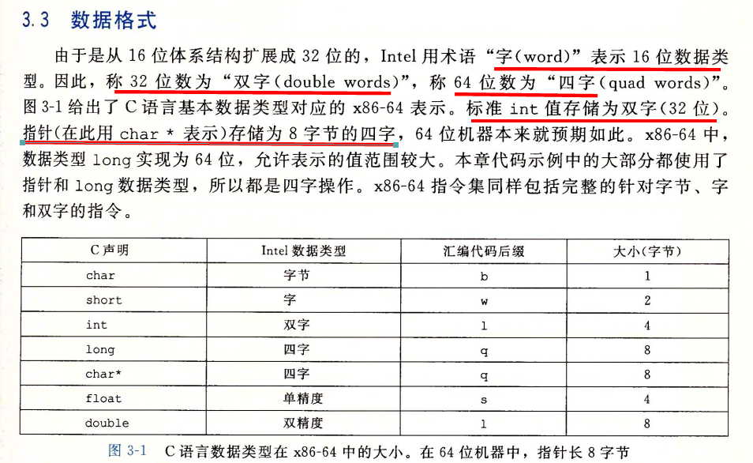
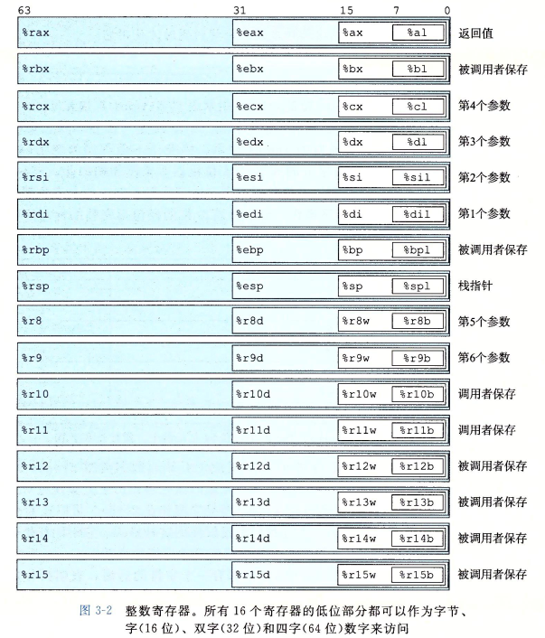
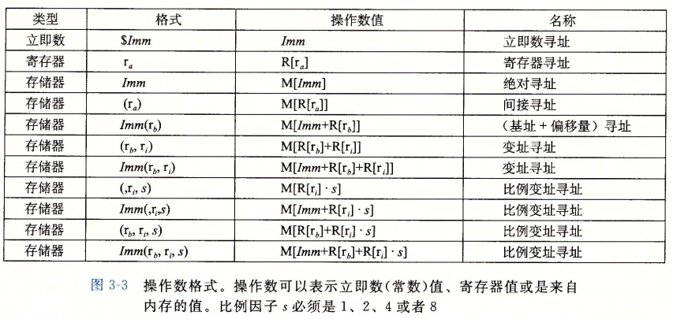
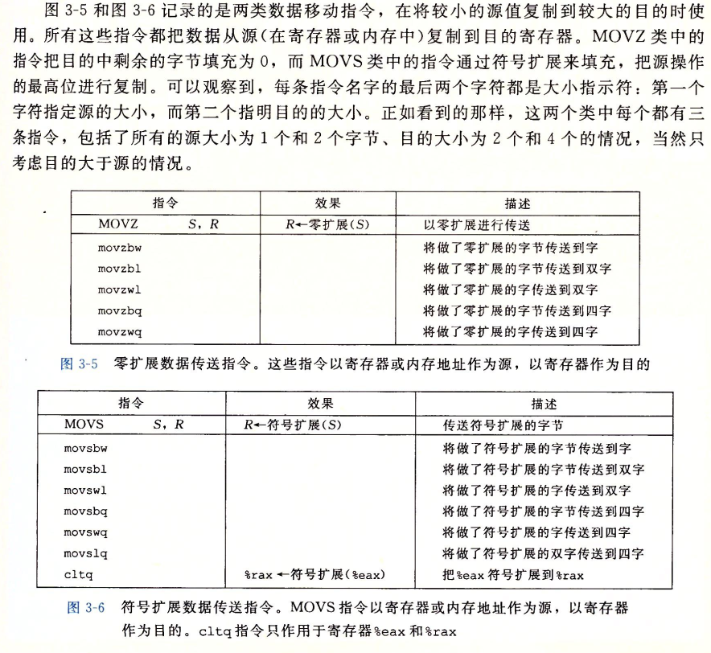
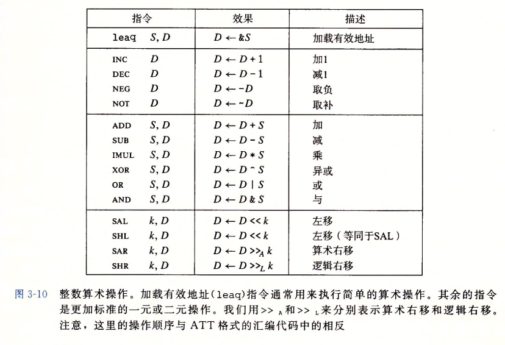
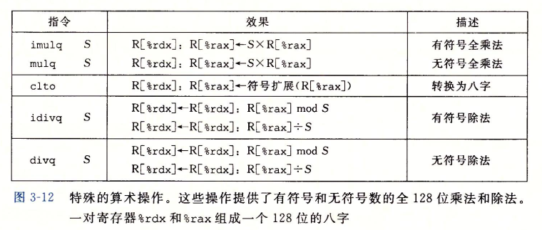

CSAPP真的是一本神书，怕自己忘记，所以本博客大量截图书中原文
一、数据格式

二、x86-64的CPU包含一组16个存储64位值的通用目的寄存器，用来存储整数数据和指针。

三、访问信息，x86-64的CPU支持多种操作数格式，各种不同操作数可能性被分为三种类型，分为立即数，用来表示常数；寄存器，用来表示某个寄存器的内容；内存引用，根据计算出来的地址访问某个内存位置。

四、MOV类

(ps:最后两个数据传送操作可以将数据压入程序栈中，以及从程序栈中弹出数据。)
五、整数和逻辑操作

（ps:加载有效地址指令leaq实际上是movq指令的变形。它的指令形式是从内存读数据到寄存器，但实际上并没有引用内存。）
六、mov和lea指令的区别
- LEA表示负载有效地址
- MOV平均负荷值
简而言之，LEA加载指向你要寻址的项的指针，而MOV则在该地址加载实际值。
例如:
1 | mov ecx,[eax+0x30]表示先运算eax+0x30得到一个结果,以这个结果为地址找一个ecx长度的内存数赋给ecx |
七、条件控制
跳转指令分三类：
- 无条件跳转: JMP;
- 根据 CX、ECX 寄存器的值跳转: JCXZ(CX 为 0 则跳转)、JECXZ(ECX 为 0 则跳转);
- 根据 EFLAGS 寄存器的标志位跳转, 以下罗列.
根据标志位跳转的指令：
1 | JE ;等于则跳转 |
跳转相关的标志位:
| 11 | 10 | 9 | 8 | 7 | 6 | 5 | 4 | 3 | 2 | 1 | 0 |
|---|---|---|---|---|---|---|---|---|---|---|---|
| OF | DF | IF | TF | SF | ZF | AF | PF | CF | |||
| 溢出 | DF | IF | TF | 符号 | 零 | 辅助 | 奇偶 | 进位 |
八、特殊算术
